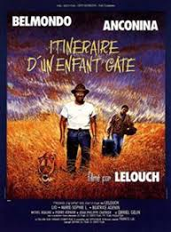
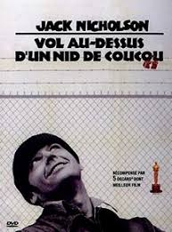
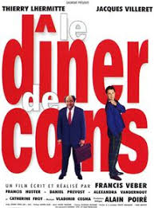

Corentin Mathias
Full full stack dev
I am nice guy
After 3 years at HEC Paris, I want to become an entrepreneur
My favorite movies
|  |
Itinéraire d'un enfant gâtéA foundling, raised in the circus, Sam Lion becomes a businessman after a trapeze accident. However, when he reaches fifty and becomes tired of his responsibilities and of his son Jean-Philippe, he decides to disappear at sea. However, he runs into Albert Duvivier, one of his former employees. He comes to realise that he has ignored the important things in his life |
|  |
Vol au dessus d'un nid de coucouMcMurphy has a criminal past and has once again gotten himself into trouble and is sentenced by the court. To escape labor duties in prison, McMurphy pleads insanity and is sent to a ward for the mentally unstable. Once here, McMurphy both endures and stands witness to the abuse and degradation of the oppressive Nurse Ratched, who gains superiority and power through the flaws of the other inmates. McMurphy and the other inmates band together to make a rebellious stance against the atrocious Nurse. |
|  |
Le dîner de consPierre Brochant, a Parisian publisher, attends a weekly "idiots' dinner", where guests, who are prominent Parisian businessmen, must bring along an "idiot" whom the other guests can ridicule. At the end of the dinner, the evening's champion idiot is selected. |